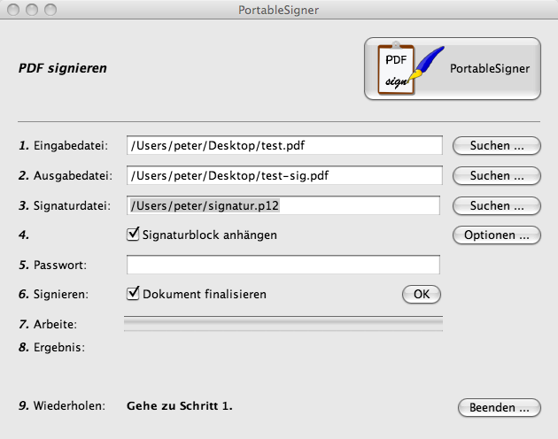

PortableSigner
PortableSignerPortableSigner ist ein Java Programm zum digitalen Signieren (mit X.509 Zertifikaten) von PDF Dateien. Es ist plattformunabhängig und läuft derzeit (zumindest) unter Windows (2000, XP, ...), Linux und Mac OS X.
Man kann PDF Dokumente mit X.509 Zertifikaten digital signieren, und dafür sorgen, das diese Dokumente nicht weiter verändert werden können, ohne dass das Dokument seine Signatur verliert. Damit erreicht man eine elektronische "Unterschrift" auf nahezu beliebigen Dokumenten. Dies entspricht wohl am ehesten dem Ansatz "Electronic Paper".
http://sf.net/projects/portablesigner/
PortableSigner kann in 2 unterschiedlichen Modi betrieben werden:
Alternativ gibt es unter Windows einen eigenen Installer, der eine Programmgruppe und die entsprechenden Menüeinträge generiert.
Für Mac OS X gibt es ein "tar.gz" File welches das Programm als Mac OS X Bundle zur Verfügung stellt
Sollte wie oben schon erwähnt eine Java 1.5 Runtime installiert sein, so muss man nur die ZIP Datei (siehe Download) auspacken und doppelklicken oder in dem ausgepackten Verzeichnis via
java -jar PortableSigner.jar
starten.
Nun sieht man etwas ähnliches wie hier:

Die Bedienung dürfte auf Basis dieser Maske relativ klar sein:
Weiterhin gibt es noch einen "Über ..."
Dialog auf dem Hauptbildschirm. Dort erfährt man die aktuelle
Version, welche man auch anmerken sollte, wenn man mit mir in Kontakt
tritt:

Das Programm unterstützt auch den Aufruf über Commandline Parameter:
pfp$ java -jar PortableSigner.jar -h
usage: PortableSigner
-b <arg> Signaturblock anhaengen. Parameter: [german|english]
-c <arg> Comment under signature block (text)
-f Wenn diese Option gesetzt ist, wird das Dokument NICHT finalisiert!
-h Hilfe (diese Seite)
-i <arg> Bild im Signaturblock
-n Ohne GUI
-o <arg> Ausgabedatei (PDF)
-p <arg> Signaturpasswort
-s <arg> Signaturdatei (P12)
-t <arg> Eingabedatei (PDF)
pfp$
Um das Beispiel von oben noch einmal als Kommandozeile auszuführen, wäre also folgende Kommandozeile notwendig:
pfp$ java -jar PortableSigner.jar -n \
-t /Users/pfp/Desktop/unsigned.pdf \
-o /Users/pfp/Desktop/signed.pdf \
-s /Users/pfp/Desktop/pfp.p12 \
-p MeinGeheimesPasswort
Das Dokument
/Users/pfp/Desktop/signed.pdf
wurde erzeugt und signiert!
pfp$
Um auch den Aufruf aus Macros zu unterstützen schaltet nur der
Schalter "-n" die GUI Komponente des Programms komplett
aus!
Peter Pfläging <peter.pflaeging@wien.gv.at>
Dieses Programm wurde vom Rechenzentrum der Stadt Wien (http://www.wien.gv.at/ma14/) erstellt.